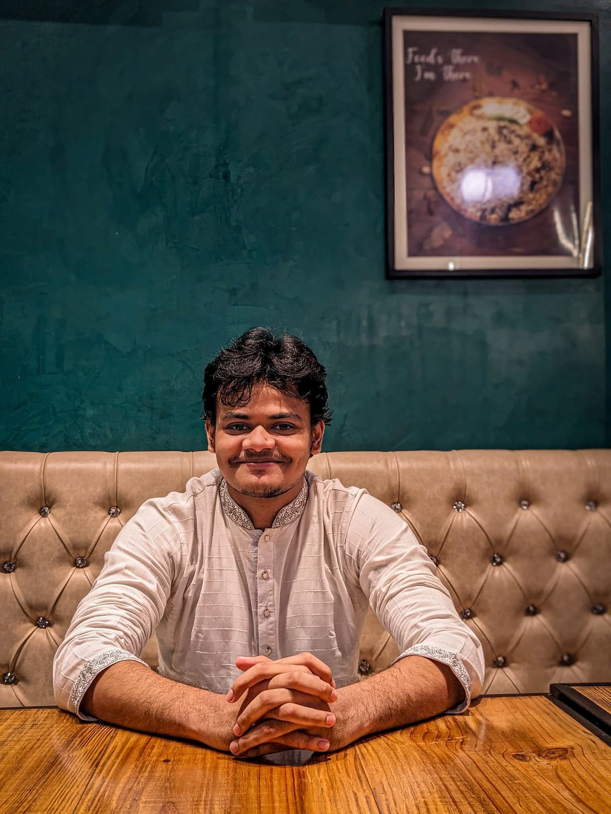

Abu Nasir Patwary
Computer Science & Engineering Graduate
United International University · Dhaka, Bangladesh
👋 I'm Abu Nasir Patwary, a Computer Science and Engineering graduate from United International University, Bangladesh. My interests lie in artificial intelligence, computer vision, vision-language models, cybersecurity, and sustainable computing.
I've always been curious about what happens beneath the surface of technology. Whenever I write and run a piece of code, I find myself wondering what happens behind the scenes: How are instructions executed? How does software interact with hardware? What mechanisms make the entire process work? Understanding these underlying processes has always fascinated me and continues to fuel my curiosity about computer science.
My academic work includes research on energy-efficient computing, AI fairness, rice-leaf disease classification, and cross-platform security. I also enjoy exploring software engineering through collaborative projects that address practical problems.